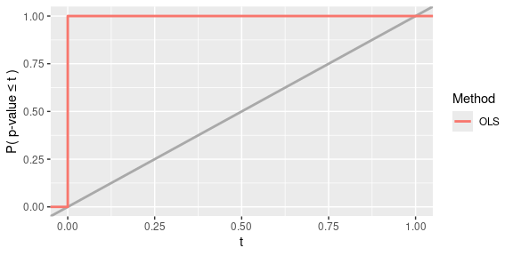
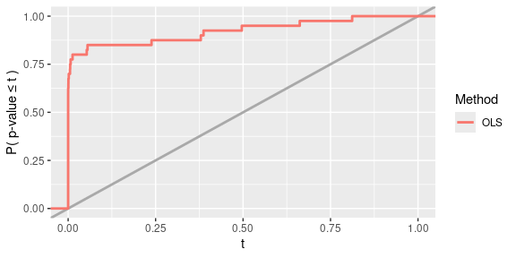
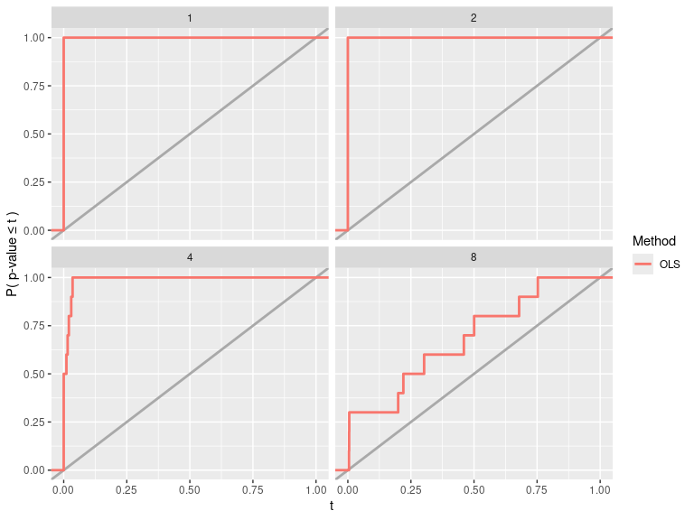

Overview
The goal of simChef is to seamlessly and efficiently run simulation experiments using a simple grammar. The results of these simulation experiments can also be conveniently viewed in an organized and interactive browser (or html file) (e.g., here). The basic usage of simChef can be summarized as follows:
-
Define data-generation, method, evaluation, and visualization functions of interest.
## Define data-generating process (DGP) function(s) dgp_fun <- function(n = 100, p = 10, noise_sd = 1) { X <- matrix(rnorm(n*p), nrow = n) betas <- rnorm(p, sd = 2) noise <- rnorm(n, sd = noise_sd) y <- X %*% betas + noise # dgp function should return a named list return(list(X = X, y = y, noise_sd = noise_sd)) } ## Define method function(s) # method function args include the names in the dgp output list (`X` and `y` here) method_fun <- function(X, y, ...) { fit <- lm(y ~ X) # by concatenating ... with the list output, we can easily pass through # other outputs from the dgp to later stages of the simulation # (evaluation and visualization) return(list(fit = fit, ...)) } ## Define evaluation function(s) # the main computational loop of the simulation will return a `tibble::tibble` # which is passed as 'fit_results' to our evaluation functions evaluator_fun <- function(fit_results) { # calculate R-squared fit_results |> dplyr::mutate( rsq = sapply(fit, function(.fit) summary(.fit)$r.squared) ) } ## d. Define visualization function(s) visualizer_fun <- function(eval_results) { require(ggplot2) # return a plot r-squared vs noise level ggplot(aes(x = noise_sd, y = rsq), data = eval_results[[1]]) + geom_point() + geom_smooth() } -
Convert functions into
DGP(),Method(),Evaluator(), andVisualizer()class objects.dgp <- create_dgp(.dgp_fun = dgp_fun, .name = "DGP1") method <- create_method(.method_fun = method_fun, .name = "Method1") evaluator <- create_evaluator(.eval_fun = evaluator_fun, .name = "Evaluator1") visualizer <- create_visualizer(.viz_fun = visualizer_fun, .name = "Visualizer1") -
Assemble these recipe parts into a complete simulation experiment.
experiment <- create_experiment(name = "Experiment") |> add_dgp(dgp) |> add_method(method) |> add_evaluator(evaluator) |> add_visualizer(visualizer) experiment -
Document and describe the simulation experiment in text.
init_docs(experiment) -
Run the experiment.
results <- run_experiment(experiment, n_reps = 100, save = TRUE) -
Visualize results via an automated R Markdown report.
render_docs(experiment)
In this vignette, we will provide an overview of the core features of simChef:
- A tidyverse-inspired grammar of data-driven simulation experiments
- A growing built-in library of composable building blocks for evaluation metrics and visualization utilities
- Flexible and seamless integration with distributed computation, caching, checkpointing, and debugging tools
- Automated generation of an R Markdown document to easily navigate, visualize, and interpret simulation results (see example here)
Note: Before proceeding through this guide, we recommend first checking out our introductory vignette: Getting started with simChef.
1 A tidy grammar for simulation experiments
Inspired by the tidyverse (Wickham et al. 2019), simChef develops an intuitive grammar for running simulation studies.
To this end, simChef conceptualizes a simulation experiment into a set of core nouns, each with a corresponding verb (or verbs).
More specifically, simChef first breaks down a simulation experiment into four modular components (or nouns), each implemented as an R6 class object (Chang 2022).
Further, each of these classes is associated with a particular action or verb (italicized below).
- DGP: the data-generating process from which to generate data.
- Method: the methods (or models) to fit in the experiment.
- Evaluator: the evaluation metrics used to evaluate the methods’ performance.
- Visualizer: the visualization procedure used to visualize outputs from the method fits or evaluation results (can be tables, plots, or even R Markdown snippets to display).
There is also a fifth and final noun:
-
Experiment: an
R6class which unites the four components above (DGP(s), Method(s), Evaluator(s), and Visualizer(s)) and stores references to these objects along with the DGP and Method parameters that should be varied in the study. There are four verbs associated with an Experiment:- Fit the Experiment: each Method in the Experiment is fit on each DGP in the Experiment.
- Evaluate the Experiment: each Evaluator in the Experiment is evaluated on the fitted experiment results.
- Visualize the Experiment: each Visualizer in the Experiment is visualized using the fitted and/or evaluated experiment results.
- Run the Experiment: wrapper to fit, evaluate, and visualize the Experiment all at once.
1.1 Basic example usage
Leveraging this grammar, we can easily use simChef to run a simulation experiment in six steps.
- Define DGP, method, evaluation, and visualization functions of interest.
- Convert functions into
DGP(),Method(),Evaluator(), andVisualizer()class objects. - Assemble objects into a complete simulation experiment.
- Document and describe the simulation experiment in text.
- Run the experiment.
- Visualize results via an automated R Markdown report.
For concreteness, suppose that we would like to run an experiment, studying the performance of linear regression under a linear Gaussian data-generating process.
Step 1. Define DGP, method, evaluation, and visualization functions of interest
To begin, we first need to define the individual parts of the simulation experiment, namely, the data-generation, method, evaluation, and visualization functions under study.
We also need to write these functions such that they “play nicely” with one another under the simChef API.
We will make note of these requirements as we go, but for an introductory overview, please refer to the Writing your own simulation experiment section in Getting started with simChef or our Cheat sheet: Inputs/outputs for user-defined functions.
Note: Step 1 requires the most user-written code. After this step, there is minimal coding on the user end as we turn to leverage the simChef grammar for experiments.
Step 1a. Define data-generating process (DGP) function(s)
As a toy DGP example, let us create a function to simulate a random Gaussian data matrix \(\mathbf{X}\) of size \(n \times 2\) and a linear response vector \(\mathbf{y}\) of size \(n \times 1\), where
\[\begin{gather*} \mathbf{X} \sim N\left(\mathbf{0}, \begin{pmatrix} 1 & \rho \\ \rho & 1 \end{pmatrix}\right), \\ \mathbf{y} = \mathbf{X} \boldsymbol{\beta} + \boldsymbol{\epsilon},\\ \boldsymbol{\epsilon} \sim N(\mathbf{0}, \sigma^2 \mathbf{I}_n) \end{gather*}\]
linear_dgp_fun <- function(n, beta, rho, sigma) {
cov_mat <- matrix(c(1, rho, rho, 1), byrow = T, nrow = 2, ncol = 2)
X <- MASS::mvrnorm(n = n, mu = rep(0, 2), Sigma = cov_mat)
y <- X %*% beta + rnorm(n, sd = sigma)
return(list(X = X, y = y))
}Requirements for DGP function syntax
DGP inputs:
- Any number of named parameters.
DGP outputs:
- A named list with all data necessary to fit the method, evaluate the method, and visualize results.
- Note: This returned list of elements will be automatically passed onto the method function(s) as input arguments of the same name.
Step 1b. Define method function(s)
Given the above DGP, suppose we want to investigate the performance of linear regression, specifically the p-values corresponding to the non-intercept coefficients from summary.lm().
lm_fun <- function(X, y, cols = c("X1", "X2")) {
lm_fit <- lm(y ~ X)
pvals_tib <- summary(lm_fit)$coefficients[cols, "Pr(>|t|)"]
names(pvals_tib) <- paste(names(pvals_tib), "p-value")
return(pvals_tib)
}Requirements for method function syntax
Method inputs:
- Named parameters matching all names in the list returned by the DGP function
linear_dgp_fun(in this case,Xandy). - Any number of additional named parameters (in this case,
cols).
Method outputs:
- A list (or array-like object) of named elements with all data necessary to evaluate the method and visualize results.
Step 1c. Define evaluation function(s)
To evaluate performance here, one metric (or statistic) of interest could be the rejection probability at some level \(\alpha\), which we compute in the following function reject_prob_fun.
reject_prob_fun <- function(fit_results, alpha = 0.05) {
group_vars <- c(".dgp_name", ".method_name")
eval_out <- fit_results |>
dplyr::group_by(across({{group_vars}})) |>
dplyr::summarise(
`X1 Reject Prob.` = mean(`X1 p-value` < alpha),
`X2 Reject Prob.` = mean(`X2 p-value` < alpha),
.groups = "keep"
)
return(eval_out)
}Requirements for evaluation function syntax
Evaluator inputs:
-
fit_results(optional, but almost always necessary): output offit_experiment(), which automatically gets passed to the evaluation function(s).- More specifically,
fit_resultsis a tibble containing the method outputs of all (replicate, DGP, method) combinations fitted in the experiment.fit_resultswill have columns named.rep,.dgp_name,.method_name, and any other named arguments that were outputted from the method function (i.e.,lm_fun). - Note: This argument must be exactly named
fit_resultsor else the evaluation function will not receive the results from the fitted experiment. - Tip: Many evaluation metrics are most naturally computed across replicates, so it is common to group the
fit_resultsby.dgp_nameand.method_nameas seen inreject_prob_fun()above. In doing so, the rejection probability (across replicates) will be computed for each (DGP, Method) combination separately. However, depending on the goal of the Evaluator function, grouping by.dgp_nameand.method_namemight not be necessary.
- More specifically,
-
vary_params(optional): character vector of parameter names that are varied across in the experiment and automatically passed to the evaluation function(s); discussed further in 1.2. - Any number of additional named parameters (in this case,
alpha).
Evaluator outputs:
- Typically a
tibbleordata.framewith the evaluated metrics or performance of the method.
Step 1d. Define visualization function(s)
Lastly, we may want to plot the results from the method fits (stored in fit_results) and/or the outputs from our evaluation metrics (stored in eval_results). For example, we could plot the power of the hypothesis test as in power_plot_fun.
power_plot_fun <- function(fit_results, col = "X1") {
plt <- ggplot2::ggplot(fit_results) +
ggplot2::aes(x = .data[[paste(col, "p-value")]],
color = as.factor(.method_name)) +
ggplot2::geom_abline(slope = 1, intercept = 0,
color = "darkgray", linetype = "solid", size = 1) +
ggplot2::stat_ecdf(size = 1) +
ggplot2::scale_x_continuous(limits = c(0, 1)) +
ggplot2::labs(x = "t", y = "P( p-value \u2264 t )",
linetype = "", color = "Method")
return(plt)
}Requirements for visualization function syntax
Visualizer inputs:
-
fit_results(optional): output offit_experiment(), which automatically gets passed to the visualization function(s).- Note: This argument must be exactly named
fit_resultsor else the visualization function will not receive the results from the fitted experiment. - Tip: Include
fit_resultsas an input parameter if the visualization is to be computed using the method outputs.
- Note: This argument must be exactly named
-
eval_results(optional): output ofevaluate_experiment(), which automatically gets passed to the visualization function(s).- More specifically,
eval_resultsis a list of named elements, one element for each Evaluator in the experiment. - Note: This argument must be exactly named
eval_resultsor else the visualization function will not receive the results from the evaluated experiment. - Tip: Include
eval_resultsas an input parameter if the visualization is to be computed using the evaluation outputs.
- More specifically,
-
vary_params(optional): character vector of parameter names that are varied across in the experiment and automatically passed to the visualization function(s); discussed further in 1.2. - Any number of additional named parameters (in this case,
col).
Visualizer outputs:
- Typically a plot. We highly recommend using
ggplotorplotly. On rarer occasions, can also return tables or more generally, any R Markdown snippet.
Step 2. Convert functions into DGP(), Method(), Evaluator(), and Visualizer() class objects
Once we have specified the relevant DGP, method, evaluation, and visualization functions, the next step is to convert these functions into DGP(), Method(), Evaluator(), and Visualizer() class objects for simChef. To do so, we simply wrap the functions in create_dgp(), create_method(), create_evaluator(), or create_visualizer(), while specifying an intelligible name for the object and any input parameters to pass to the function.
Each create_*() function follows the same syntax and takes in the inputs:
-
.*_fun: the function from which to simulate data, fit the method, evaluate metrics, or create a visualization (depending on*). -
.name: an (intelligible) object name, which will be used in creating the R Markdown report. -
...: additional arguments to pass to.*_funabove.

DGP(), Method(), Evaluator(), Visualizer()) in a simChef Experiment. Using these classes, users can easily build a simChef Experiment using reusable, custom user-defined functions (i.e., dgp_fun, method_fun, eval_fun, and viz_fun). Optional named parameters can be set in these user-defined functions via the ... arguments in the create_*() methods.For example,
## DGPs
linear_dgp <- create_dgp(
.dgp_fun = linear_dgp_fun, .name = "Linear Gaussian DGP",
# additional named parameters to pass to .dgp_fun()
n = 200, beta = c(1, 0), rho = 0, sigma = 1
)
## Methods
lm_method <- create_method(
.method_fun = lm_fun, .name = "OLS"
# additional named parameters to pass to .method_fun()
)
## Evaluators
reject_prob_eval <- create_evaluator(
.eval_fun = reject_prob_fun, .name = "Rejection Prob. (alpha = 0.1)",
# additional named parameters to pass to .eval_fun()
alpha = 0.1
)
## Visualizers
power_plot <- create_visualizer(
.viz_fun = power_plot_fun, .name = "Power"
# additional named parameters to pass to .viz_fun()
)Some notes on the use of ... arguments in create_*():
-
...arguments increate_*()must be named arguments that match those in.*_fun(). -
...arguments increate_*()will override any default arguments set in.*_fun().- E.g., In
reject_prob_eval,alpha = 0.1, not0.05.
- E.g., In
- If
...arguments increate_*()are not specified, the default arguments in.*_fun()are used.- E.g., In
lm_method,cols = c("X1", "X2").
- E.g., In
Step 3. Assemble objects into a complete simulation experiment
At this point, we have created a DGP() (dgp), Method() (lm_method), Evaluator() (reject_prob_eval), and Visualizer() (power_plot) for our simulation experiment.
The next step is to create a simulation experiment recipe and add each component to the recipe via:
experiment <- create_experiment(name = "Linear Regression Experiment") |>
add_dgp(linear_dgp) |>
add_method(lm_method) |>
add_evaluator(reject_prob_eval) |>
add_visualizer(power_plot)Tip: We can easily see the individual parts of the simulation experiment recipe by printing the experiment.
print(experiment)
#> Experiment Name: Linear Regression Experiment
#> Saved results at: results/Linear Regression Experiment
#> DGPs: Linear Gaussian DGP
#> Methods: OLS
#> Evaluators: Rejection Prob. (alpha = 0.1)
#> Visualizers: Power
#> Vary Across: NoneNotes:
- Any number of DGPs, Methods, Evaluators, and Visualizers can be added to the simulation experiment recipe.
- Once a DGP, Method, Evaluator, or Visualizer has been added to the simulation experiment recipe, the component can be updated using
update_dgp(),update_method(),update_evaluator(), orupdate_visualizer()and removed usingremove_dgp(),remove_method(),remove_evaluator(), orremove_visualizer().
Step 4. Document and describe the simulation experiment in text
A crucial component when running veridical simulations is documentation. We highly encourage practitioners to document:
- the purpose or objective of the simulation experiment,
- what
DGP(s),Method(s),Evaluator(s), andVisualizer(s)were used, and - why these
DGP(s),Method(s),Evaluator(s), andVisualizer(s)were chosen.
This can and should be done before even running the simulation experiment.
To facilitate this tedious but important process, we have provided a convenient helper function init_docs() to initialize/create a documentation template:
init_docs(experiment)This creates a series of blank .md files for the user to fill out with descriptions of the simulation experiment and its recipe components. These blank .md files can be found in the experiment’s root results directory under docs/. To find the experiment’s root results directory, use get_save_dir(experiment). You can find example .md files corresponding to the current experiment and others here.
Step 5. Run the experiment
Thus far, we have created and documented the simulation experiment recipe, but we have not generated any results from the experiment. That is, we have only given the simulation experiment instructions on what to do. To run the experiment, say over 10 replicates, we can do so via
results <- run_experiment(experiment, n_reps = 10, save = TRUE)
#> Error in get(paste0(generic, ".", class), envir = get_method_env()) :
#> object 'type_sum.accel' not found
#> Fitting Linear Regression Experiment...
#> Saving fit results...
#> Fit results saved | time taken: 0.016710 seconds
#> 10 reps completed (totals: 10/10) | time taken: 0.042153 minutes
#> ==============================
#> Evaluating Linear Regression Experiment...
#> Evaluation completed | time taken: 0.000143 minutes
#> Saving eval results...
#> Eval results saved | time taken: 0.087202 seconds
#> ==============================
#> Visualizing Linear Regression Experiment...
#> Warning: Using `size` aesthetic for lines was deprecated in ggplot2 3.4.0.
#> ℹ Please use `linewidth` instead.
#> This warning is displayed once every 8 hours.
#> Call `lifecycle::last_lifecycle_warnings()` to see where this warning was
#> generated.
#> Visualization completed | time taken: 0.002383 minutes
#> Saving viz results...
#> Viz results saved | time taken: 0.080761 seconds
#> ==============================run_experiment() is a convenient wrapper function that:
- Fits the experiment (
fit_experiment()), which fits eachMethodon eachDGPin theExperiment, - Evaluates the experiment (
evaluate_experiment()), which evaluates eachEvaluatoron the fitted results, and - Visualizes the experiment (
visualize_experiment()), which visualizes eachVisualizeron the fitted and/or evaluated results.
Consequently, the output of run_experiment() is a list of length three:
str(results, max.level = 2)
#> List of 3
#> $ fit_results : tibble [10 × 5] (S3: tbl_df/tbl/data.frame)
#> $ eval_results:List of 1
#> ..$ Rejection Prob. (alpha = 0.1): tibble [1 × 4] (S3: tbl_df/tbl/data.frame)
#> $ viz_results :List of 1
#> ..$ Power:List of 11
#> .. ..- attr(*, "class")= chr [1:2] "gg" "ggplot"-
fit_results: output offit_experiment()- A tibble of results from each (replicate, DGP, Method) combination with the following columns:
-
.rep: replicate ID -
.dgp_name: name of DGP -
.method_name: name of Method -
vary_acrossparameter columns (if applicable): value of the specifiedvary_acrossparameter - A column corresponding to each named component in the list returned by
Method(e.g.,method_out1,method_out2, …)
results$fit_results #> # A tibble: 10 × 5 #> .rep .dgp_name .method_name `X1 p-value` `X2 p-value` #> <chr> <chr> <chr> <dbl> <dbl> #> 1 1 Linear Gaussian DGP OLS 4.90e-29 0.704 #> 2 2 Linear Gaussian DGP OLS 4.28e-28 0.713 #> 3 3 Linear Gaussian DGP OLS 1.60e-38 0.680 #> 4 4 Linear Gaussian DGP OLS 2.31e-29 0.0115 #> 5 5 Linear Gaussian DGP OLS 8.08e-33 0.127 #> 6 6 Linear Gaussian DGP OLS 8.95e-29 0.980 #> 7 7 Linear Gaussian DGP OLS 6.84e-33 0.385 #> 8 8 Linear Gaussian DGP OLS 6.60e-29 0.116 #> 9 9 Linear Gaussian DGP OLS 4.16e-28 0.765 #> 10 10 Linear Gaussian DGP OLS 1.28e-21 0.530 -
- A tibble of results from each (replicate, DGP, Method) combination with the following columns:
-
eval_results: output ofevaluate_experiment()- A named list of elements, with one element for each
Evaluatorin theExperiment- The list names correspond to the names given to each
Evaluatorincreate_evaluator(.name = ...) - The list elements are exactly the return values from each
Evaluatorfunction
results$eval_results #> $`Rejection Prob. (alpha = 0.1)` #> # A tibble: 1 × 4 #> .dgp_name .method_name `X1 Reject Prob.` `X2 Reject Prob.` #> <chr> <chr> <dbl> <dbl> #> 1 Linear Gaussian DGP OLS 1 0.1 - The list names correspond to the names given to each
- A named list of elements, with one element for each
-
viz_results: output ofvisualize_experiment()- A named list of elements, with one element for each
Visualizerin theExperiment- The list names correspond to the names given to each
Visualizerincreate_visualizer(.name = ...) - The list elements are exactly the return values from each
Visualizerfunction
results$viz_results #> $Power - The list names correspond to the names given to each
- A named list of elements, with one element for each
Notes:
- By default, the results are not saved to disk. However, to generate the R Markdown report, we will need to save the results to disk and hence set
save = TRUEin the call torun_experiment()above. - The experiment can also be run in parallel. For a more detailed walkthrough on how to parallelize the experiment, please see
vignette("parallel").
Step 6. Visualize results via an automated R Markdown report
Finally, to visualize and report all results from the simulation experiment, we can render the R Markdown documentation. This will generate a single html document, including the code, documentation (from Step 4), and simulation results.
render_docs(experiment)The results can be found here.
Note that if the documentation template has not yet been created for experiment (e.g., via init_docs(experiment)), then render_docs() will automatically create the documentation template for the user to fill out. Again, we highly encourage practitioners to document their simulation experiments in the spirit of transparency and reproducibility.
1.2 Example usage with varying across component
Now, moving slightly beyond the most basic usage of simChef, it is often helpful to understand how a method’s performance is affected as we vary parameter(s) in the DGP and/or method across different values.
For instance, what happens to the power as the amount of noise in the linear model increases?
Using the grammar of simChef, we can investigate this question by adding a vary_across component to the Experiment. In this example, we are varying the sigma (i.e,. the noise level) parameter in the Linear Gaussian DGP across four different values (i.e,. 1, 2, 4, and 8) while keeping all other parameters fixed at their baseline value.
experiment <- experiment |>
add_vary_across(.dgp = "Linear Gaussian DGP", sigma = c(1, 2, 4, 8))
print(experiment)
#> Experiment Name: Linear Regression Experiment
#> Saved results at: results/Linear Regression Experiment
#> DGPs: Linear Gaussian DGP
#> Methods: OLS
#> Evaluators: Rejection Prob. (alpha = 0.1)
#> Visualizers: Power
#> Vary Across:
#> DGP: Linear Gaussian DGP
#> sigma: num [1:4] 1 2 4 8About add_vary_across()
More generally, add_vary_across() can be used to vary across one or more parameters in a DGP or Method while keeping all other parameters fixed at their baseline value. The inputs to add_vary_across are as follows:
-
.dgp,.method: Name of theDGP/Methodto vary or theDGP/Methodobject itself.- Note: Only one of
.dgpor.methodcan be specified at a time. To vary across more than oneDGPand/orMethod, use a separateadd_vary_across()call for each.
- Note: Only one of
-
...: Any number of named arguments of the form[param_name] = [param_values].-
[param_name]should be the name of the argument/parameter in theDGP/Methodfunction that will be varied. -
[param_values]should be a vector or list of values that[param_name]will take on, while all other arguments are kept constant at their baseline value (seeDGP$dgp_paramsorMethod$method_paramsfor these baseline values).
-
Some notes on varying across multiple parameters:
- If multiple arguments of
[param_name] = [param_values]are provided within a call toadd_vary_across(), the cross-product of parameter values is taken.- E.g.,
add_vary_across(.dgp = "Linear Gaussian DGP", sigma = c(1, 2, 4, 8), n = c(100, 200, 300))will result in \(4 \times 3 = 12\) distinct configurations of theDGP.
- E.g.,
- It is possible to vary across both
DGPandMethodparameters in anExperiment. Here, all DGP-method combinations are fitted.- E.g.,
add_vary_across(.dgp = "Linear Gaussian DGP", sigma = c(1, 2, 4, 8)) |> add_vary_across(.method = "OLS", cols = c("X1", "X2"))results in 8 DGP-method combinations to be fitted in theExperiment(4 variations on theDGP\(\times\) 2 variations on theMethod).
- E.g.,
However, when we run the experiment, the results are not quite what we want.
While fit_results yields a tibble with 40 rows (= 10 replicates \(\times\) 4 DGP variations \(\times\) 1 Method) as desired, the evaluation results in eval_results have been summarized/aggregated across all values of sigma.
vary_results <- run_experiment(experiment, n_reps = 10, save = TRUE)
#> Fitting Linear Regression Experiment...
#> Saving fit results...
#> Fit results saved | time taken: 0.025724 seconds
#> 10 reps completed (totals: 10/10) | time taken: 0.144608 minutes
#> ==============================
#> Evaluating Linear Regression Experiment...
#> Evaluation completed | time taken: 0.000168 minutes
#> Saving eval results...
#> Eval results saved | time taken: 0.027669 seconds
#> ==============================
#> Visualizing Linear Regression Experiment...
#> Visualization completed | time taken: 0.000227 minutes
#> Saving viz results...
#> Viz results saved | time taken: 0.091859 seconds
#> ==============================
vary_results$fit_results
#> # A tibble: 40 × 6
#> .rep .dgp_name .method_name sigma `X1 p-value` `X2 p-value`
#> <chr> <chr> <chr> <dbl> <dbl> <dbl>
#> 1 1 Linear Gaussian DGP OLS 1 1.29e-31 0.300
#> 2 1 Linear Gaussian DGP OLS 2 6.56e- 8 0.975
#> 3 1 Linear Gaussian DGP OLS 4 6.78e- 4 0.692
#> 4 1 Linear Gaussian DGP OLS 8 5.55e- 2 0.955
#> 5 2 Linear Gaussian DGP OLS 1 7.20e-32 0.971
#> 6 2 Linear Gaussian DGP OLS 2 1.51e-11 0.281
#> 7 2 Linear Gaussian DGP OLS 4 8.09e- 4 0.301
#> 8 2 Linear Gaussian DGP OLS 8 4.96e- 1 0.922
#> 9 3 Linear Gaussian DGP OLS 1 5.10e-32 0.944
#> 10 3 Linear Gaussian DGP OLS 2 2.48e-12 0.429
#> # ℹ 30 more rows
vary_results$eval_results
#> $`Rejection Prob. (alpha = 0.1)`
#> # A tibble: 1 × 4
#> .dgp_name .method_name `X1 Reject Prob.` `X2 Reject Prob.`
#> <chr> <chr> <dbl> <dbl>
#> 1 Linear Gaussian DGP OLS 0.85 0.1
vary_results$viz_results
#> $Power
To see how different values of sigma impact the OLS results, we need to modify our Evaluator and Visualizer functions.
Specifically, in reject_prob_fun(), we want to group fit_results by sigma in addition to .dgp_name and .method_name.
To do this, we can manually set group_vars <- c(".dgp_name", ".method_name", "sigma").
However, it would be better practice to make use of an input argument named vary_params like below.
When we run the experiment (via run_experiment()), vary_params will be auto-filled by a vector of the parameter names that are varied (i.e., those that have been added via add_vary_across()).
In this case, vary_params will be auto-filled by c("sigma").
Thus, by using this vary_params argument, the Evaluator will work more generally, even if other parameters besides sigma are varied in the Experiment.
reject_prob_fun <- function(fit_results, vary_params = NULL, alpha = 0.05) {
group_vars <- c(".dgp_name", ".method_name", vary_params) # MODIFIED!
eval_out <- fit_results |>
dplyr::group_by(across({{group_vars}})) |>
dplyr::summarise(
`X1 Reject Prob.` = mean(`X1 p-value` < alpha),
`X2 Reject Prob.` = mean(`X2 p-value` < alpha),
.groups = "keep"
)
return(eval_out)
}
reject_prob_eval <- create_evaluator(
.eval_fun = reject_prob_fun, .name = "Rejection Prob. (alpha = 0.1)",
# additional named parameters to pass to .eval_fun()
alpha = 0.1
)Similarly in power_plot_fun(), we need to add vary_params as an input argument to plot the results across different values of sigma.
power_plot_fun <- function(fit_results, vary_params = NULL, col = "X1") {
plt <- ggplot2::ggplot(fit_results) +
ggplot2::aes(x = .data[[paste(col, "p-value")]],
color = as.factor(.method_name)) +
ggplot2::geom_abline(slope = 1, intercept = 0,
color = "darkgray", linetype = "solid", linewidth = 1) +
ggplot2::stat_ecdf(size = 1) +
ggplot2::scale_x_continuous(limits = c(0, 1)) +
ggplot2::labs(x = "t", y = "P( p-value \u2264 t )",
linetype = "", color = "Method")
# MODIFIED!
if (!is.null(vary_params)) {
plt <- plt + ggplot2::facet_wrap(~ .data[[vary_params]])
}
return(plt)
}
power_plot <- create_visualizer(.viz_fun = power_plot_fun, .name = "Power")Now, we are ready to update our experiment with the corrected Evaluator and Visualizer and run the experiment via:
vary_results <- experiment |>
update_evaluator(reject_prob_eval, name = "Rejection Prob. (alpha = 0.1)") |>
update_visualizer(power_plot, name = "Power") |>
run_experiment(n_reps = 10, save = TRUE)
#> Fitting Linear Regression Experiment...
#> Saving fit results...
#> Fit results saved | time taken: 0.046635 seconds
#> 10 reps completed (totals: 10/10) | time taken: 0.147674 minutes
#> ==============================
#> Evaluating Linear Regression Experiment...
#> Evaluation completed | time taken: 0.000099 minutes
#> Saving eval results...
#> Eval results saved | time taken: 0.028360 seconds
#> ==============================
#> Visualizing Linear Regression Experiment...
#> Visualization completed | time taken: 0.000178 minutes
#> Saving viz results...
#> Viz results saved | time taken: 0.102311 seconds
#> ==============================
vary_results$fit_results
#> # A tibble: 40 × 6
#> .rep .dgp_name .method_name sigma `X1 p-value` `X2 p-value`
#> <chr> <chr> <chr> <dbl> <dbl> <dbl>
#> 1 1 Linear Gaussian DGP OLS 1 1.15e-36 0.365
#> 2 1 Linear Gaussian DGP OLS 2 6.67e-10 0.927
#> 3 1 Linear Gaussian DGP OLS 4 2.98e- 2 0.833
#> 4 1 Linear Gaussian DGP OLS 8 5.00e- 1 0.267
#> 5 2 Linear Gaussian DGP OLS 1 1.07e-37 0.719
#> 6 2 Linear Gaussian DGP OLS 2 3.43e-12 0.398
#> 7 2 Linear Gaussian DGP OLS 4 3.35e- 5 0.446
#> 8 2 Linear Gaussian DGP OLS 8 6.79e- 1 0.0588
#> 9 3 Linear Gaussian DGP OLS 1 2.89e-36 0.933
#> 10 3 Linear Gaussian DGP OLS 2 9.61e-13 0.0187
#> # ℹ 30 more rows
vary_results$eval_results
#> $`Rejection Prob. (alpha = 0.1)`
#> # A tibble: 4 × 5
#> .dgp_name .method_name sigma `X1 Reject Prob.` `X2 Reject Prob.`
#> <chr> <chr> <dbl> <dbl> <dbl>
#> 1 Linear Gaussian DGP OLS 1 1 0.1
#> 2 Linear Gaussian DGP OLS 2 1 0.1
#> 3 Linear Gaussian DGP OLS 4 1 0
#> 4 Linear Gaussian DGP OLS 8 0.3 0.1
vary_results$viz_results
#> $Power
Note here we need to use update_* instead of add_* since an Evaluator named “Rejection Prob. (alpha = 0.1)” and a Visualizer named “Power” already exist in the Experiment. Using add_* will throw an error.
1.3 More example usages with varying across component
To further showcase the power of simChef and to provide additional examples, let’s add another plot (in fact, an interactive plot using plotly::ggplotly) to our Experiment and run the Experiment (a) across various values of the coefficient \(\boldsymbol{\beta}_2\) and (b) across the correlation \(\rho\) between features in \(\mathbf{X}\).
Notes:
- The visualizer function below (
reject_prob_plot_fun) takes in theEvaluatorresults, stored aseval_results, and plots the rejection probability for the \(\boldsymbol{\beta}_1\) at \(\alpha = 0.1\). - In order to vary the coefficient \(\boldsymbol{\beta}_2\), we must specify this through the argument
beta, which is vector-valued. To plot this vector-valued parameter on the x-axis (or any axis) in our plots, an additional pre-processing step must be performed since these values are not directly compatible withggplot. Here, we leverage a built-in helper functionlist_col_to_chr(), which converts a list-type tibble column to a character-type tibble column that is amenable for plotting (unlike the list-type column). This preprocessing step usinglist_col_to_chr()is included in bothreject_prob_plot_fun()and our updated version ofpower_plot_fun()below. - To reduce the computational burden in this vignette, we choose not to vary across multiple parameters simultaneously and instead, choose to vary only a single
DGPargument in each run of the experiment (hence, the use ofremove_vary_across()below).
# create rejection probability plot
reject_prob_plot_fun <- function(eval_results, vary_params = NULL) {
eval_name <- "Rejection Prob. (alpha = 0.1)"
eval_results_df <- eval_results[[eval_name]]
if (is.list(eval_results_df[[vary_params]])) {
# deal with the case when we vary across a parameter that is vector-valued
eval_results_df[[vary_params]] <- list_col_to_chr(
eval_results_df[[vary_params]], name = vary_params, verbatim = TRUE
)
}
plt <- ggplot2::ggplot(eval_results_df) +
ggplot2::aes(x = .data[[vary_params]], y = `X1 Reject Prob.`,
color = as.factor(.method_name),
fill = as.factor(.method_name)) +
ggplot2::labs(x = vary_params, y = eval_name,
color = "Method", fill = "Method") +
ggplot2::scale_y_continuous(limits = c(0, 1))
if (is.numeric(eval_results_df[[vary_params]])) {
plt <- plt +
ggplot2::geom_line() +
ggplot2::geom_point(size = 2)
} else {
plt <- plt +
ggplot2::geom_bar(stat = "identity")
}
return(plotly::ggplotly(plt))
}
reject_prob_plot <- create_visualizer(
.viz_fun = reject_prob_plot_fun, .name = "Rejection Prob. (alpha = 0.1) Plot"
)
# update power plot to work for vector-valued vary_params
power_plot_fun <- function(fit_results, vary_params = NULL, col = "X1") {
if (is.list(fit_results[[vary_params]])) {
# deal with the case when we vary across a parameter that is vector-valued
fit_results[[vary_params]] <- list_col_to_chr(
fit_results[[vary_params]], name = vary_params, verbatim = TRUE
)
}
plt <- ggplot2::ggplot(fit_results) +
ggplot2::aes(x = .data[[paste(col, "p-value")]],
color = as.factor(.method_name)) +
ggplot2::geom_abline(slope = 1, intercept = 0,
color = "darkgray", linetype = "solid", linewidth = 1) +
ggplot2::stat_ecdf(size = 1) +
ggplot2::scale_x_continuous(limits = c(0, 1)) +
ggplot2::labs(x = "t", y = "P( p-value \u2264 t )",
linetype = "", color = "Method")
if (!is.null(vary_params)) {
plt <- plt + ggplot2::facet_wrap(~ .data[[vary_params]])
}
return(plt)
}
power_plot <- create_visualizer(.viz_fun = power_plot_fun, .name = "Power")
# update experiment
experiment <- experiment |>
update_visualizer(power_plot, name = "Power") |>
add_visualizer(reject_prob_plot)
# (a) run experiment across varying values of beta_2
vary_beta2_results <- experiment |>
remove_vary_across(dgp = "Linear Gaussian DGP") |>
add_vary_across(
.dgp = "Linear Gaussian DGP",
beta = list(
c(1, 0),
c(1, 0.5),
c(1, 1),
c(1, 1.5),
c(1, 2)
)
) |>
run_experiment(n_reps = 10, save = TRUE)
#> Fitting Linear Regression Experiment...
#> Saving fit results...
#> Fit results saved | time taken: 0.029902 seconds
#> 10 reps completed (totals: 10/10) | time taken: 0.180027 minutes
#> ==============================
#> Evaluating Linear Regression Experiment...
#> Evaluation completed | time taken: 0.000166 minutes
#> Saving eval results...
#> Eval results saved | time taken: 0.030001 seconds
#> ==============================
#> Visualizing Linear Regression Experiment...
#> Visualization completed | time taken: 0.002005 minutes
#> Saving viz results...
#> Viz results saved | time taken: 0.145333 seconds
#> ==============================
# (b) run experiment across varying values of rho (correlation)
vary_cor_results <- experiment |>
remove_vary_across(dgp = "Linear Gaussian DGP") |>
add_vary_across(.dgp = "Linear Gaussian DGP", rho = c(0, 0.2, 0.5, 0.9)) |>
run_experiment(n_reps = 10, save = TRUE)
#> Fitting Linear Regression Experiment...
#> Saving fit results...
#> Fit results saved | time taken: 0.030957 seconds
#> 10 reps completed (totals: 10/10) | time taken: 0.157227 minutes
#> ==============================
#> Evaluating Linear Regression Experiment...
#> Evaluation completed | time taken: 0.000100 minutes
#> Saving eval results...
#> Eval results saved | time taken: 0.031338 seconds
#> ==============================
#> Visualizing Linear Regression Experiment...
#> Visualization completed | time taken: 0.001362 minutes
#> Saving viz results...
#> Viz results saved | time taken: 0.147545 seconds
#> ==============================Rather than printing all results from these experiment runs here, let’s generate the R Markdown report summary:
render_docs(experiment)The results can be found here.
2 Simulation experiment templates and library
In addition to the grammar of simulation experiments, simChef also offers a growing built-in library of composable building blocks and templates to meet common simulation needs.
2.1 Boilerplate code templates
In particular, we have created boilerplate code templates for running common types of simulation experiments, namely, those focused on prediction (regression and classification), feature selection, and inference. These templates provide (1) a quick starting point with Evaluators and Visualizers that are commonly used for the specified type of simulation experiment and (2) a concrete example of how to get started using functions from the simChef library.
In particular, we have implemented the following templates:
use_prediction_template(type = "regression")use_prediction_template(type = "classification")use_feature_selection_template()use_inference_template()
These functions will print out code to the console that can be easily copied and/or run. For example,
use_prediction_template(type = "regression")
#> dgp <- create_dgp(
#> .dgp_fun = stop('Add DGP function here.'),
#> .name = stop('Add name of DGP here.'),
#> stop('Add additional arguments (if necessary) to pass to DGP here.')
#> )
#>
#> method <- create_method(
#> .method_fun = stop('Add Method function here.'),
#> .name = stop('Add name of Method here.'),
#> stop('Add additional arguments (if necessary) to pass to Method here.')
#> )
#>
#> nested_pred_cols <- stop('(Optional) Add name of column in `fit_results` with prediction result columns to be unnested.')
#> true_pred_col <- stop('Add name of column in `fit_results` with true responses here.')
#> est_pred_col <- stop('Add name of column in `fit_results` with the predicted responses here.')
#>
#>
#> pred_err <- create_evaluator(
#> .eval_fun = summarize_pred_err,
#> .name = 'Prediction Accuracy',
#> nested_cols = nested_pred_cols,
#> truth_col = true_pred_col,
#> estimate_col = est_pred_col
#> )
#>
#> pred_err_plot <- create_visualizer(
#> .viz_fun = plot_pred_err,
#> .name = 'Prediction Accuracy Plot',
#> eval_name = 'Prediction Accuracy'
#> )
#>
#> experiment <- create_experiment(name = 'Prediction Experiment') |>
#> add_dgp(dgp) |>
#> add_method(method) |>
#> add_evaluator(pred_err) |>
#> add_visualizer(pred_err_plot)
#>
#> init_docs(experiment) #> fill out documentation before proceeding!
#>
#> results <- run_experiment(
#> experiment = experiment,
#> n_reps = stop('Add number of replicates here.'),
#> save = TRUE
#> )
#>
#> render_docs(experiment)For more guidance, we can also include concrete examples of a DGP and Method via:
use_prediction_template(
type = "regression", include_dgp_example = TRUE, include_method_example = TRUE
)
#> if (!require('dplyr')) install.packages('dplyr')
#> if (!require('purrr')) install.packages('purrr')
#> if (!require('ranger')) install.packages('ranger')
#>
#>
#> gaussian_linear_dgp <- function (n, p, beta = 1, err_sd = 1, data_split = TRUE, train_prop = 0.5,
#> return_support = TRUE)
#> {
#> X <- matrix(stats::rnorm(n * p), nrow = n, ncol = p)
#> beta_vec <- matrix(beta, ncol = 1, nrow = p)
#> y <- X %*% beta_vec + stats::rnorm(n = n, sd = err_sd)
#> if (data_split) {
#> train_ids <- sample(1:n, size = round(n * train_prop))
#> Xtest <- X[-train_ids, , drop = FALSE]
#> ytest <- y[-train_ids]
#> X <- X[train_ids, , drop = FALSE]
#> y <- y[train_ids]
#> }
#> else {
#> Xtest <- NULL
#> ytest <- NULL
#> }
#> if (return_support) {
#> support <- which(beta_vec != 0)
#> out <- list(X = X, y = y, Xtest = Xtest, ytest = ytest,
#> support = support)
#> }
#> else {
#> out <- list(X = X, y = y, Xtest = Xtest, ytest = ytest)
#> }
#> return(out)
#> }
#>
#> dgp <- create_dgp(
#> .dgp_fun = gaussian_linear_dgp,
#> .name = 'Example DGP (Uncorrelated Gaussian Linear DGP)',
#> n = 200,
#> p = 10,
#> beta = c(1, 1, 1, 1, 1, 0, 0, 0, 0, 0),
#> err_sd = 1,
#> data_split = TRUE,
#> train_prop = 0.5,
#> return_support = TRUE
#> )
#>
#> rf_method <- function (X, y, Xtest, ytest, support, ...)
#> {
#> data <- cbind(as.data.frame(X), .y = y)
#> if (is.factor(y)) {
#> mtry <- round(sqrt(ncol(X)))
#> }
#> else {
#> mtry <- round(ncol(X)/3)
#> }
#> fit <- ranger::ranger(data = data, dependent.variable.name = ".y",
#> importance = "impurity", mtry = mtry, num.threads = 1,
#> ...)
#> preds <- stats::predict(fit, as.data.frame(Xtest))$predictions
#> if (is.factor(y)) {
#> k <- nlevels(y)
#> prob_preds <- stats::predict(fit, as.data.frame(Xtest),
#> predict.all = TRUE, num.threads = 1)$predictions
#> prob_preds <- dplyr::select(stats::setNames(purrr::list_rbind(purrr::map(1:nrow(prob_preds),
#> function(i) {
#> x <- factor(prob_preds[i, ], levels = 1:k)
#> tibble::as_tibble_row(c(prop.table(table(x))))
#> })), levels(y)), -1)
#> }
#> else {
#> prob_preds <- NULL
#> }
#> p <- ncol(X)
#> if (is.null(colnames(X))) {
#> features <- 1:p
#> }
#> else {
#> features <- colnames(X)
#> }
#> out <- list(y = ytest, predictions = preds, prob_predictions = prob_preds,
#> support_df = data.frame(feature = features, true_support = 1:p %in%
#> support, imp = fit$variable.importance, selected = fit$variable.importance >
#> mean(fit$variable.importance)))
#> return(out)
#> }
#>
#> method <- create_method(
#> .method_fun = rf_method,
#> .name = 'RF'
#> )
#>
#> nested_pred_cols <- c('y', 'predictions', 'prob_predictions') # prediction results columns to be unnested
#> true_pred_col <- 'y' # true response column
#> est_pred_col <- 'predictions' # predicted response column
#>
#>
#> pred_err <- create_evaluator(
#> .eval_fun = summarize_pred_err,
#> .name = 'Prediction Accuracy',
#> nested_cols = nested_pred_cols,
#> truth_col = true_pred_col,
#> estimate_col = est_pred_col
#> )
#>
#> pred_err_plot <- create_visualizer(
#> .viz_fun = plot_pred_err,
#> .name = 'Prediction Accuracy Plot',
#> eval_name = 'Prediction Accuracy'
#> )
#>
#> experiment <- create_experiment(name = 'Prediction Experiment') |>
#> add_dgp(dgp) |>
#> add_method(method) |>
#> add_evaluator(pred_err) |>
#> add_visualizer(pred_err_plot)
#>
#> init_docs(experiment) #> fill out documentation before proceeding!
#>
#> results <- run_experiment(
#> experiment = experiment,
#> n_reps = stop('Add number of replicates here.'),
#> save = TRUE
#> )
#>
#> render_docs(experiment)A complete list of boilerplate templates can be found here.
2.2 Library of DGPs, Evaluators, and Visualizers
Beyond these templates, there is also a growing library of built-in evaluation metrics, visualization utilities, and other helper developer functions within simChef.
These built-in functions can sometimes greatly reduce the amount of user-written code in Step 1 (from Section 1.1).
For more information on available functions in this built-in library, please see the following:
A library of DGPs is in the works as part of the dgpoix R package (currently, in very early development stages).
3 Tools for faster development and computation of simulation experiments
3.1 Parallelization
Given the large amount of computation that simulation studies require, one of the main goals of simChef is to make it easy to parallelize your simulations.
simChef uses the R package future to distribute simulation replicates across whatever available resources the user specifies.
All you have to do to start running your simulations in parallel is set the future plan before calling run_experiment():
n_workers <- availableCores() - 1
plan(multisession, workers = n_workers)For more information on parallelization, please refer to Computing experimental replicates in parallel.
3.2 Caching
To reduce redundant computations, one may want to avoid re-running previously computed and saved components of an Experiment.
This can be done by setting the argument use_cached to TRUE in run_experiment().
More specifically, when an Experiment is run with use_cached = TRUE, all previously cached results (i.e., those that have been previously saved to disk with save = TRUE) are loaded in and checked if their corresponding Experiment matches the configurations of the current Experiment.
If the cached Experiment configurations match that of the current Experiment, the cached results are used and only the uncached components of the Experiment are run.
As an example, let us run the following experiment and save its results.
experiment <- create_experiment(name = "Linear Regression Experiment") |>
add_dgp(linear_dgp) |>
add_method(lm_method) |>
add_evaluator(reject_prob_eval) |>
add_visualizer(power_plot) |>
add_visualizer(reject_prob_plot) |>
add_vary_across(.dgp = "Linear Gaussian DGP", sigma = c(1, 2, 4, 8))
orig_results <- run_experiment(experiment, n_reps = 10, save = TRUE)
#> Fitting Linear Regression Experiment...
#> Saving fit results...
#> Fit results saved | time taken: 0.035465 seconds
#> 10 reps completed (totals: 10/10) | time taken: 0.218098 minutes
#> ==============================
#> Evaluating Linear Regression Experiment...
#> Evaluation completed | time taken: 0.000098 minutes
#> Saving eval results...
#> Eval results saved | time taken: 0.022480 seconds
#> ==============================
#> Visualizing Linear Regression Experiment...
#> Visualization completed | time taken: 0.001094 minutes
#> Saving viz results...
#> Viz results saved | time taken: 0.137255 seconds
#> ==============================When setting use_cached = TRUE, the following line of code will not generate any new results but will instead read in the saved or cached results from disk.
cached_results <- run_experiment(experiment, n_reps = 10, use_cached = TRUE)
#> Reading in cached fit results...
#> ==============================
#> Reading in cached eval results...
#> ==============================
#> Reading in cached viz results...
#> ==============================
all.equal(cached_results, orig_results)
#> [1] TRUEWe can also choose to read in a smaller number of the cached replicates,
smaller_results <- run_experiment(experiment, n_reps = 5, use_cached = TRUE)
#> Reading in cached fit results...
#> ==============================
#> Evaluating Linear Regression Experiment...
#> Evaluation completed | time taken: 0.000101 minutes
#> ==============================
#> Visualizing Linear Regression Experiment...
#> Visualization completed | time taken: 0.001082 minutes
#> ==============================
all.equal(
smaller_results$fit_results,
orig_results$fit_results |> dplyr::filter(as.numeric(.rep) <= 5)
)
#> [1] TRUEor increase the number of replicates without re-doing computation for the previously cached replicates.
larger_results <- run_experiment(experiment, n_reps = 15, use_cached = TRUE)
#> Reading in cached fit results...
#> Fitting Linear Regression Experiment...
#> 5 reps completed (totals: 15/15) | time taken: 0.117192 minutes
#> ==============================
#> Evaluating Linear Regression Experiment...
#> Evaluation completed | time taken: 0.000100 minutes
#> ==============================
#> Visualizing Linear Regression Experiment...
#> Visualization completed | time taken: 0.001081 minutes
#> ==============================
all.equal(
larger_results$fit_results |> dplyr::filter(as.numeric(.rep) <= 10),
orig_results$fit_results
)
#> [1] TRUEIn addition, caching works when adding or modifying components of an Experiment.
In the following, we add a new DGP to the Experiment.
As a result, when we run the Experiment with use_cached = TRUE, only the replicates involving the new DGP are run while the replicates involving the old DGP (i.e., the Linear Gaussian DGP) are loaded in from the cache.
new_dgp <- create_dgp(
.dgp_fun = linear_dgp_fun, .name = "Linear Gaussian DGP (large n)",
n = 500, beta = c(1, 0), rho = 0, sigma = 1
)
experiment <- experiment |>
add_dgp(new_dgp)
new_results <- run_experiment(experiment, n_reps = 10, use_cached = TRUE)
#> Fitting Linear Regression Experiment...
#> Reading in cached fit results...
#> Appending cached results to the new fit results...
#> 10 reps completed (totals: 10/10) | time taken: 0.080150 minutes
#> ==============================
#> Evaluating Linear Regression Experiment...
#> Evaluation completed | time taken: 0.000107 minutes
#> ==============================
#> Visualizing Linear Regression Experiment...
#> Visualization completed | time taken: 0.001238 minutes
#> ==============================
all.equal(
new_results$fit_results |> dplyr::filter(.dgp_name == "Linear Gaussian DGP"),
orig_results$fit_results
)
#> [1] TRUENote that since we did not save the Experiment results above, then the following will recompute the replicates corresponding to the new DGP. Please set save = TRUE in order to cache the results for future use.
new_results2 <- run_experiment(experiment, n_reps = 10, use_cached = TRUE)
#> Fitting Linear Regression Experiment...
#> Reading in cached fit results...
#> Appending cached results to the new fit results...
#> 10 reps completed (totals: 10/10) | time taken: 0.080675 minutes
#> ==============================
#> Evaluating Linear Regression Experiment...
#> Evaluation completed | time taken: 0.000099 minutes
#> ==============================
#> Visualizing Linear Regression Experiment...
#> Visualization completed | time taken: 0.001115 minutes
#> ==============================Some other helpful functions regarding caching include:
# to load in the cached fit results for an experiment
fit_results <- get_cached_results(experiment, "fit")
# to load in the cached evaluation results for an experiment
eval_results <- get_cached_results(experiment, "eval")
# to load in the cached visualization results for an experiment
viz_results <- get_cached_results(experiment, "viz")
# to load in the cached Experiment object
experiment <- get_cached_results(experiment, "experiment")
# to load in the Experiment parameters corresponding to the cached *_results
cached_exp_params <- get_cached_results(experiment, "experiment_cached_params")
# to clear the cache
clear_cache(experiment)3.3 Checkpointing
A checkpoint is a periodic snapshot of the simulation results, saved to disk. Checkpoints help guard against lost progress in the case of unexpected problems, such as node failures when running on a cluster, at the cost of longer simulation running times. Checkpoints are most useful for long-running simulations where the cost of creating the checkpoints is small relative to the total cost of the simulation. As a result, users should be careful not to create checkpoints more often than necessary.
To enable checkpointing, use a positive value for the argument checkpoint_n_reps passed to run_experiment().
Below is an artificial example in which we use checkpointing and encounter errors as the simulation progresses past the first checkpoint:
counter <- 0
# a DGP which returns an error on its 26th call (i.e., when counter hits 26)
checkpoint_dgp_fun <- function() {
counter <<- counter + 1
if (counter == 26) stop("Unexpected error!")
return("data")
}
checkpoint_dgp <- create_dgp(checkpoint_dgp_fun, .name = "Checkpoint DGP")
# a toy Method
checkpoint_method_fun <- function(...) return("result")
checkpoint_method <- create_method(checkpoint_method_fun, .name = "Method")
# create checkpoint experiment
checkpoint_experiment <- create_experiment(name = "checkpoint-exper") |>
add_dgp(checkpoint_dgp) |>
add_method(checkpoint_method)
# run 100 reps, checkpointing every 25 reps, though it should return an error
checkpoint_results <- run_experiment(
checkpoint_experiment, n_reps = 100, checkpoint_n_reps = 25
)
#> Fitting checkpoint-exper...
#> Saving fit results checkpoint...
#> Fit results saved | time taken: 0.015790 seconds
#> 25 reps completed (totals: 25/100) | time taken: 0.200792 minutes
#> Error in `self$fit()`:
#> ! Error(s) encountered while running the simulation, including:
#>
#> Unexpected error!
#> The above error occurred while processing "Checkpoint DGP" (params empty).
#>
#> Run `rlang::last_error()$partial_results`to return partial simulation results.
#> Run `rlang::last_error()$errors` to inspect each error, along with the params,
#> `DGP`, `Method`, and inputs/outputs before the error occurred.Since a full 25 replicates completed before the simulation failed, the first checkpoint was successful.
You can use get_cached_results(checkpoint_experiment, "fit") to examine the completed replicates, or simply continue the simulation using the same code you already ran (since the error will not be returned again by design).
checkpoint_results <- run_experiment(
checkpoint_experiment, n_reps = 100, checkpoint_n_reps = 25
)
#> Reading in cached fit results...
#> Fitting checkpoint-exper...
#> Saving fit results checkpoint...
#> Fit results saved | time taken: 0.026841 seconds
#> 25 reps completed (totals: 50/100) | time taken: 0.202223 minutes
#> Saving fit results checkpoint...
#> Fit results saved | time taken: 0.026854 seconds
#> 25 reps completed (totals: 75/100) | time taken: 0.404212 minutes
#> Saving fit results...
#> Fit results saved | time taken: 0.026655 seconds
#> 25 reps completed (totals: 100/100) | time taken: 0.606401 minutes
#> ==============================
#> No evaluators to evaluate. Skipping evaluation.
#> ==============================
#> No visualizers to visualize. Skipping visualization.
#> ==============================3.4 Error debugging
In the event of an error, simChef makes it possible to both retrieve results from completed replicates (before the error occurred) and to gracefully debug errors in user-defined functions. For the sake of demonstration, let us create an artificial example.
# create experiment
dgp_fun <- function() return("data")
dgp_fun_err <- function() { stop("Uh oh!") }
dgp <- create_dgp(dgp_fun, .name = "Working DGP")
dgp_err <- create_dgp(dgp_fun_err, .name = "Buggy DGP")
method_fun <- function(x) return("result")
method <- create_method(method_fun, .name = "Method")
buggy_experiment <- create_experiment(name = "debugging-exper") |>
add_dgp(dgp) |>
add_dgp(dgp_err) |>
add_method(method)
# run experiment though it should return an error
results <- run_experiment(buggy_experiment, n_reps = 2)
#> Fitting debugging-exper...
#> Error in `self$fit()`:
#> ! Error(s) encountered while running the simulation, including:
#>
#> Uh oh!
#> The above error occurred while processing "Buggy DGP" (params empty).
#>
#> Run `rlang::last_error()$partial_results`to return partial simulation results.
#> Run `rlang::last_error()$errors` to inspect each error, along with the params,
#> `DGP`, `Method`, and inputs/outputs before the error occurred.If working interactively, the error can be inspected using the usual call to rlang::last_error(). Results that were run and completed before the error can be recovered via rlang::last_error()$partial_results and you can find errors that occurred within the simulation loop via rlang::last_error()$errors.
Alternatively, we can wrap the call that ran the error (in this case, run_experiment()) in tryCatch() as follows:
results <- tryCatch(
run_experiment(buggy_experiment, n_reps = 2),
error = identity
)
#> Fitting debugging-exper...
results
#> <error/simChef_error>
#> Error in `self$fit()`:
#> ! Error(s) encountered while running the simulation, including:
#>
#> Uh oh!
#> The above error occurred while processing "Buggy DGP" (params empty).
#>
#> Run `rlang::last_error()$partial_results`to return partial simulation results.
#> Run `rlang::last_error()$errors` to inspect each error, along with the params,
#> `DGP`, `Method`, and inputs/outputs before the error occurred.
#> ---
#> Backtrace:
#> ▆
#> 1. ├─base::tryCatch(...)
#> 2. │ └─base (local) tryCatchList(expr, classes, parentenv, handlers)
#> 3. │ └─base (local) tryCatchOne(expr, names, parentenv, handlers[[1L]])
#> 4. │ └─base (local) doTryCatch(return(expr), name, parentenv, handler)
#> 5. └─simChef::run_experiment(buggy_experiment, n_reps = 2)
#> 6. └─experiment$run(...)
#> 7. └─self$fit(...)From this, we can view the results that were completed before we ran into the error via
results$partial_results
#> # A tibble: 1 × 4
#> .rep .dgp_name .method_name result1
#> <chr> <chr> <chr> <chr>
#> 1 1 Working DGP Method resultand extract the error object(s) via
results$errors
#> # A tibble: 1 × 11
#> .rep .dgp .dgp_name .dgp_params .method .method_name .method_params .method_output .err .pid .gc
#> <chr> <list> <chr> <lgl> <lgl> <chr> <lgl> <lgl> <list> <int> <list>
#> 1 1 <DGP> Buggy DGP NA NA NA NA NA <smChf_rr> 15256 <dbl [2 × 6]>Note that the error tibble contains the DGP and Method (if the DGP was not the error cause) that were being processed when the error occurred in the .dgp and .method columns, respectively.
The corresponding input parameters are in the .dgp_params and .method_params columns (both NA here since no parameters were varied in the experiment).
Finally, the captured error itself is in the .err column.
Using this, we can easily investigate and reproduce the error and if desired, work directly with the user-specified function that raised the error, e.g.,
# get dgp that ran the error
err_fun <- results$errors$.dgp[[1]]$dgp_fun
# reproduce error via a direct call to the DGP function that raised the error
err_fun()
#> Error in err_fun(): Uh oh!4 R Markdown documentation
One of the key features of simChef is the ease of generating an R Markdown report via render_docs() as shown below. This automated documentation gathers the scientific details, summary tables, and plots side-by-side with the user’s custom source code and parameters for DGPs, methods, evaluation metrics, and visualization procedures.
render_docs(experiment)To be more precise, this call to render_docs(experiment) will compile the documentation and results (both evaluation and visualization results) from all saved Experiments under the experiment’s root results directory (specified by get_save_dir(experiment)).
Equivalently, we can create the same R Markdown report summary by directly specifying the experiment’s root results directory.
render_docs(save_dir = get_save_dir(experiment))4.1 Customizing document options for Evaluators and Visualizers
There are several options to customize the aesthetics of Evaluators and Visualizers displayed in the R Markdown report.
These can be set using the .doc_options argument in create_evaluator() and create_visualizer().
For example, we can customize the height and width of the Power plot via
power_plot <- create_visualizer(
.viz_fun = power_plot_fun, .name = "Power",
.doc_options = list(height = 10, width = 8)
)
experiment <- experiment |>
update_visualizer(power_plot, name = "Power")and the number of digits in the evaluation table outputs via
reject_prob_eval <- create_evaluator(
.eval_fun = reject_prob_fun, .name = "Rejection Prob. (alpha = 0.1)",
alpha = 0.1, .doc_options = list(digits = 3)
)
experiment <- experiment |>
update_evaluator(reject_prob_eval, name = "Rejection Prob. (alpha = 0.1)")Alternatively, set_doc_options() can be used to update the R Markdown option for an existing object, e.g.,
experiment <- experiment |>
set_doc_options(
field_name = "visualizer", name = "Power", height = 10, width = 8
)
save_experiment(experiment)To hide the output of an Evaluator or Visualizer in the R Markdown report, use set_doc_options(show = FALSE, ...) or create_*(.doc_show = FALSE, ...).
Moreover, for an Evaluator, the maximum number of rows to display in the R Markdown report can be set via set_doc_options(nrows = 10, ...) or create_*(.doc_nrows = 10, ...).
Note that if document options are set after running the experiment, the experiment must be manually saved via save_experiment(experiment) in order for these changes to appear in the R Markdown output.
4.2 Customizing aesthetics of R Markdown documentation
There are additional customization options that can be set in render_docs() including the order in which results of Evaluators and Visualizers are displayed (via the eval_order and viz_order arguments) and the R Markdown output type or theme. For example,
# use html_document instead of vthemes::vmodern (default)
render_docs(experiment, output_format = rmarkdown::html_document())
# add custom css style
render_docs(experiment, output_options = list(css = "path/to/file.css"))To modify the R Markdown file directly, set write_rmd = TRUE in render_docs():
render_docs(experiment, write_rmd = TRUE)This will write/save the raw R Markdown file used to generate the automated simChef documentation to your disk.
The file can be found in the experiment’s root results directory (specified by get_save_dir(experiment)) and can be directly modified to your liking.
5 Additional notes and usage
5.1 The Experiment R6 class
It is important to note that the Experiment class is an R6.
With this, we need to be careful about clones versus pointers.
In the following, it may look like the new_experiment object has a vary_across component while the old_experiment object does not have a vary_across component.
However, due to the use of the R6 class, when old_experiment is piped into add_vary_across(), this is in itself modifying old_experiment, and new_experiment is simply pointing to this modified old_experiment.
old_experiment <- create_experiment(name = "Old Experiment") |>
add_dgp(linear_dgp) |>
add_method(lm_method) |>
add_evaluator(reject_prob_eval) |>
add_visualizer(power_plot)
old_experiment
#> Experiment Name: Old Experiment
#> Saved results at: results/Old Experiment
#> DGPs: Linear Gaussian DGP
#> Methods: OLS
#> Evaluators: Rejection Prob. (alpha = 0.1)
#> Visualizers: Power
#> Vary Across: None
new_experiment <- old_experiment |>
add_vary_across(.dgp = "Linear Gaussian DGP", sigma = c(1, 2, 4, 8))
old_experiment
#> Experiment Name: Old Experiment
#> Saved results at: results/Old Experiment
#> DGPs: Linear Gaussian DGP
#> Methods: OLS
#> Evaluators: Rejection Prob. (alpha = 0.1)
#> Visualizers: Power
#> Vary Across:
#> DGP: Linear Gaussian DGP
#> sigma: num [1:4] 1 2 4 8
all.equal(new_experiment, old_experiment)
#> [1] TRUE
data.table::address(new_experiment) == data.table::address(old_experiment)
#> [1] TRUE5.2 Creating an experiment from another experiment
To modify new_experiment without changing old_experiment, we need to create new_experiment as a clone of the old_experiment as follows:
new_experiment <- create_experiment(
name = "I am a clone", clone_from = old_experiment
)
data.table::address(new_experiment) == data.table::address(old_experiment)
#> [1] FALSE
new_experiment
#> Experiment Name: I am a clone
#> Saved results at: results/Old Experiment
#> DGPs: Linear Gaussian DGP
#> Methods: OLS
#> Evaluators: Rejection Prob. (alpha = 0.1)
#> Visualizers: Power
#> Vary Across: NoneWhen creating an Experiment from a clone, we are making a deep clone of the parent experiment’s DGPs, Methods, Evaluators, and Visualizers, but not the vary_across component.
Thus, if we want a vary_across component in new_experiment, we must add this vary_across component ourselves:
new_experiment <- new_experiment |>
add_vary_across(.dgp = "Linear Gaussian DGP", sigma = c(1, 2, 4, 8))We can also add/update DGPs, Methods, Evaluators, and Visualizers to the cloned experiment without modifying the parent old_experiment.
# add DGP
new_dgp <- create_dgp(
.dgp_fun = linear_dgp_fun, .name = "Linear Gaussian DGP (large n)",
n = 500, beta = c(1, 0), rho = 0, sigma = 1
)
new_experiment <- new_experiment |>
add_dgp(new_dgp)
new_experiment
#> Experiment Name: I am a clone
#> Saved results at: results/Old Experiment
#> DGPs: Linear Gaussian DGP, Linear Gaussian DGP (large n)
#> Methods: OLS
#> Evaluators: Rejection Prob. (alpha = 0.1)
#> Visualizers: Power
#> Vary Across:
#> DGP: Linear Gaussian DGP
#> sigma: num [1:4] 1 2 4 8
old_experiment
#> Experiment Name: Old Experiment
#> Saved results at: results/Old Experiment
#> DGPs: Linear Gaussian DGP
#> Methods: OLS
#> Evaluators: Rejection Prob. (alpha = 0.1)
#> Visualizers: Power
#> Vary Across:
#> DGP: Linear Gaussian DGP
#> sigma: num [1:4] 1 2 4 85.3 Additional handling of the experiment
run_experiment() is the easiest and most concise way of running the simulation experiment from start to finish.
However, when debugging and developing the simulation experiment, it may be helpful to run only parts of the experiment so as to not repeat time-consuming, redundant computations.
As discussed in Section 1, run_experiment() is a wrapper around fit_experiment(), evaluate_experiment(), and visualize_experiment().
Although generally not necessary, sometimes it can be helpful to call each of these functions separately:
fit_results <- fit_experiment(experiment, n_reps = 10)
#> Fitting Linear Regression Experiment...
#> 10 reps completed (totals: 10/10) | time taken: 0.244829 minutes
#> ==============================
eval_results <- evaluate_experiment(experiment, fit_results)
#> Evaluating Linear Regression Experiment...
#> Evaluation completed | time taken: 0.000101 minutes
#> ==============================
viz_results <- visualize_experiment(experiment, fit_results, eval_results)
#> Visualizing Linear Regression Experiment...
#> Visualization completed | time taken: 0.001062 minutes
#> ==============================Similarly, although it is not usually necessary, there may be some instances (e.g., for exploratory data analysis or further diagnosis of the experiment results), in which one would like to generate small samples of data from the DGPs in the experiment via
data_list <- generate_data(experiment, n_reps = 1)
str(data_list)
#> List of 1
#> $ Linear Gaussian DGP:List of 4
#> ..$ :List of 1
#> .. ..$ :List of 2
#> .. .. ..$ X: num [1:200, 1:2] 1.7222 2.1346 -0.0689 -0.8678 2.29 ...
#> .. .. .. ..- attr(*, "dimnames")=List of 2
#> .. .. .. .. ..$ : NULL
#> .. .. .. .. ..$ : NULL
#> .. .. ..$ y: num [1:200, 1] 0.792 1.003 1.017 -0.354 2.583 ...
#> .. ..- attr(*, "params")=List of 1
#> .. .. ..$ sigma: num 1
#> ..$ :List of 1
#> .. ..$ :List of 2
#> .. .. ..$ X: num [1:200, 1:2] -0.533 -0.876 -0.139 -0.94 0.664 ...
#> .. .. .. ..- attr(*, "dimnames")=List of 2
#> .. .. .. .. ..$ : NULL
#> .. .. .. .. ..$ : NULL
#> .. .. ..$ y: num [1:200, 1] -3.077 1.072 2.423 -0.992 -2.808 ...
#> .. ..- attr(*, "params")=List of 1
#> .. .. ..$ sigma: num 2
#> ..$ :List of 1
#> .. ..$ :List of 2
#> .. .. ..$ X: num [1:200, 1:2] -3.289 -1.4307 -1.4029 -0.0207 -1.2221 ...
#> .. .. .. ..- attr(*, "dimnames")=List of 2
#> .. .. .. .. ..$ : NULL
#> .. .. .. .. ..$ : NULL
#> .. .. ..$ y: num [1:200, 1] -5.7 1.48 -3.87 -1.07 -6.29 ...
#> .. ..- attr(*, "params")=List of 1
#> .. .. ..$ sigma: num 4
#> ..$ :List of 1
#> .. ..$ :List of 2
#> .. .. ..$ X: num [1:200, 1:2] 2.456 -0.896 -0.755 -0.27 -1.16 ...
#> .. .. .. ..- attr(*, "dimnames")=List of 2
#> .. .. .. .. ..$ : NULL
#> .. .. .. .. ..$ : NULL
#> .. .. ..$ y: num [1:200, 1] 6.995 -4.652 1.447 -0.012 4.911 ...
#> .. ..- attr(*, "params")=List of 1
#> .. .. ..$ sigma: num 8It may also be helpful to work with individual DGP(), Method(), Evaluator(), and Visualizer() objects outside of running an Experiment. This can be done by leveraging the verbs and grammar laid out in Section 1. The API is as follows:
data_list <- DGP$generate()
method_results <- Method$fit(data_list = data_list)
eval_results <- Evaluator$evaluate(
fit_results = fit_results,
vary_params = vary_params
)
viz_results <- Visualizer$visualize(
fit_results = fit_results,
eval_results = eval_results,
vary_params = vary_params
)Here, fit_results is the output of fit_experiment(), eval_results is the output of evaluate_experiment(), and vary_params is a character vector of the parameter names that are being varied in the experiment.
Other helpful methods for handling the experiment include the get_* family of methods, i.e.,
get_dgps(experiment)
#> $`Linear Gaussian DGP`
#> DGP Name: Linear Gaussian DGP
#> Function: function (n, beta, rho, sigma)
#> Parameters: List of 4
#> $ n : num 200
#> $ beta : num [1:2] 1 0
#> $ rho : num 0
#> $ sigma: num 1
get_methods(experiment)
#> $OLS
#> Method Name: OLS
#> Function: function (X, y, cols = c("X1", "X2"))
#> Parameters: list()
get_evaluators(experiment)
#> $`Rejection Prob. (alpha = 0.1)`
#> Evaluator Name: Rejection Prob. (alpha = 0.1)
#> Function: function (fit_results, vary_params = NULL, alpha = 0.05)
#> Parameters: List of 1
#> $ alpha: num 0.1
#> R Markdown Options: List of 3
#> $ digits : num 3
#> $ sigfig : logi FALSE
#> $ options:List of 2
#> ..$ scrollX : logi TRUE
#> ..$ scrollCollapse: logi TRUE
#> Show in R Markdown: TRUE
get_visualizers(experiment)
#> $Power
#> Visualizer Name: Power
#> Function: function (fit_results, vary_params = NULL, col = "X1")
#> Parameters: list()
#> R Markdown Options: List of 2
#> $ height: num 10
#> $ width : num 8
#> Show in R Markdown: TRUE
#>
#> $`Rejection Prob. (alpha = 0.1) Plot`
#> Visualizer Name: Rejection Prob. (alpha = 0.1) Plot
#> Function: function (eval_results, vary_params = NULL)
#> Parameters: list()
#> R Markdown Options: List of 2
#> $ height: num 6
#> $ width : num 10
#> Show in R Markdown: TRUE
get_vary_across(experiment)
#> $dgp
#> $dgp$`Linear Gaussian DGP`
#> $dgp$`Linear Gaussian DGP`$sigma
#> [1] 1 2 4 8
#>
#>
#>
#> $method
#> list()
get_save_dir(experiment)
#> [1] "./results/Linear Regression Experiment"5.4 Saving results
Since the R Markdown report heavily relies on the results file structure to organize the report summary, it may be helpful to understand the default saving structure utilized in simChef.
By default, the experiment’s root results directory is ./results/{EXPERIMENT_NAME}. To change the root results directory, one can specify the desired directory via the save_dir argument in create_experiment() or use the set_save_dir() helper function.
All results from run_experiment(experiment, ..., save = TRUE) without a vary_across component are then saved under the root results directory. If experiment has a vary_across component, then the results of run_experiment(experiment, ..., save = TRUE) are saved under ./{ROOT_RESULTS_DIR}/{DGP_OR_METHOD_NAME}/Varying {PARAM_NAME}/.
Here’s the directory tree of the “Linear Regression Experiment” example:
fs::dir_tree(get_save_dir(experiment))
#> results
#> ├── Linear Gaussian DGP
#> │ ├── Varying beta
#> │ │ ├── eval_results.rds
#> │ │ ├── experiment.rds
#> │ │ ├── experiment_cached_params.rds
#> │ │ ├── fit_results.rds
#> │ │ └── viz_results.rds
#> │ ├── Varying rho
#> │ │ ├── eval_results.rds
#> │ │ ├── experiment.rds
#> │ │ ├── experiment_cached_params.rds
#> │ │ ├── fit_results.rds
#> │ │ └── viz_results.rds
#> │ └── Varying sigma
#> │ ├── eval_results.rds
#> │ ├── experiment.rds
#> │ ├── fit_results.rds
#> │ └── viz_results.rds
#> ├── Linear Regression Experiment.html
#> ├── docs
#> │ ├── dgps
#> │ │ └── Linear Gaussian DGP.md
#> │ ├── evaluators
#> │ │ └── Rejection Prob. (alpha = 0.1).md
#> │ ├── methods
#> │ │ └── OLS.md
#> │ ├── objectives.md
#> │ └── visualizers
#> │ ├── Power.md
#> │ └── Rejection Prob. (alpha = 0.1) Plot.md
#> ├── eval_results.rds
#> ├── experiment.rds
#> ├── experiment_cached_params.rds
#> ├── fit_results.rds
#> └── viz_results.rds5.5 Simulation project template
To help with onboarding and setting up your simulation study, we have provided a helper function init_sim_project(), which initializes a ready-to-use directory for your simChef simulation project:
init_sim_project(path = "path/to/your/project")This will create a project directory with the following structure:
project/
├── .git
├── .gitignore
├── R # folder containing general R functions
│ ├── dgp ## folder containing dgp functions
│ ├── eval ## folder containing evaluation functions
│ ├── method ## folder containing method functions
│ └── viz ## folder containing visualization functions
├── README.md
├── meals # folder containing scripts to assemble/run simulation experiments
│ └── meal.R ## example script to assemble/run a simulation experiment
├── renv
├── results # folder containing results from simulation experiments
└── tests # folder containing test scripts
├── testthat
│ ├── dgp-tests ## folder containing tests for dgp functions
│ ├── eval-tests ## folder containing tests for evaluation functions
│ ├── method-tests ## folder containing tests for method functions
│ └── viz-tests ## folder containing tests for visualization functions
└── testthat.RUsing this project directory structure, we recommend placing your DGP, method, evaluation, and visualization functions in the appropriate subdirectories within the R directory to stay modular and organized. Then, to assemble and run your simulation experiment, you can write an executable meal script and store it in the meals directory. To see what this project directory structure may look like in practice for our toy simulation, check out this GitHub repository.
Moreover, init_sim_project() automatically integrates your simulation project with several major reproducibility and replicability tools, including git (for version control), renv (for management of package dependencies), and testthat (for unit testing). For more information and other best practices to improve reproducibility and replicability of your simulation study, please see the vignette Setting up your simulation study.